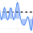

Signals and Systems
Interactive visualizations for understanding fundamental concepts in signal processing and systems theory
Cosine-Sine Decomposition
Explore how a phase-shifted cosine can be decomposed into scaled cosine and sine components. Interactive visualization of the trigonometric identity.
Cosine-Sine Extraction
Discover how integration can extract frequency components from composite signals. Interactive demonstration of Fourier analysis principles.